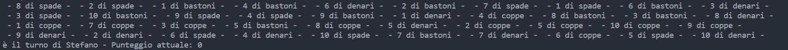
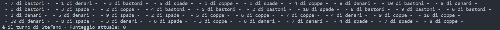

Gioco delle coppie di carte
(richiede una connessione ad internet per la corretta visualizzazione)
Simulazione del programma:
Il programma, all'avvio, richiede i nickname dei due giocatori (in questo caso Andrea come P1 e Stefano come P2) e il numero di scambi da effettuare sul mazzo (40)
Viene scelto casualmente e poi comunicato il giocatore che inizia la partita. Viene stampato il mazzo, inizialmente totalmente coperto, e il punteggio del giocatore attuale. l'utente può, poi, effettuare la scelta delle due carte. ad ogni scelta effettuata è possibile visualizzare la carta desiderata. Nel caso in cui le carte scelte hanno divero valore, il programma passa il turno all'altro giocatore
Una volta cambiato giocatore, potrà anche lui effettuare la sua scelta. In questo caso, dove il giocatore attuale riesce a scegliere due carte di ugual valore, il suo turno continua e viene stampato un messaggio di "conferma"
Dopo che un giocatore trova una coppia di carte, le stesse vengono stampate come "scoperte" all'inizio del turno, e viene mostrato il punteggio aggiornato, aumentato di 1
Le scelte effettuate dall'utente, inoltre, vengono controllate e verificate, sia per quanto riguarda il range (0-39), sia per la scelta di una carta già scoperta, sia per la doppia scelta della stessa carta
Una volta raggiunte le 40 carte scoperte, la partita viene interrotta
A seconda del risultato, viene comunicato il nickname ed il punteggio del giocatore vincitore
Oppure viene mostrato un messaggio di parità tra i due giocatori

Di lato sono presenti ulteriori test per mostrare la casualità del mescolaggio del mazzo e della scelta del giocatore del primo turno (P1 nick -> Andrea, P2 nick -> Stefano)

Secondo test, viene scelto P2 per il primo turno
Terzo test, viene scelto P1 per il primo turno